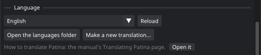

Translating Patina
Patina's interface can be shown in any language. A translation is one text file: every text of the interface in English, each with its translation beside it. You don't need to know any programming to make one, and the tools translators already use (Poedit, Weblate, Crowdin, Lokalize) read and write it.
Choosing a language
Edit › Preferences › Language lists English, the translations that come with Patina, and yours. Pick one and the interface changes at once. Patina remembers it.

The list also has a test language. It shows every translatable text with accents and brackets, like
[Påïñt··], a third longer than the English. Text that still shows plain English can't be translated yet.
Longer text shows where a translation will need more room.
Starting a translation
- In Edit › Preferences › Language, choose Make a new translation….
- Type the language's code: two letters for the language, with a region after an underscore if it matters
(
fr,de,es,pt_BR,zh_CN,ja). Then its name in that language (Français, Deutsch). Choose Make it. - Patina copies the template to
<code>.poin your languages folder and opens the folder. An existing file is never replaced. - Open the file in Poedit (free, for Windows, macOS and Linux) or any text editor, and translate.
- Save it, then choose your language in Preferences, or press Reload to see the changes while you work.
Your languages folder is ~/.local/share/patina/user/languages on Linux and
%LOCALAPPDATA%\Patina\user\languages on Windows. Open the languages folder in Preferences opens it.
The template, patina.pot, is in the languages folder next to Patina's materials.
What the file looks like
Each text is an entry: msgid is the English, msgstr is your translation. The
#: line says where in Patina's code the text is, which helps when a word could mean two things.
#: src/ui/Toolbars.cpp:120
msgid "Paint"
msgstr "Peindre"
#: src/ui/LanguageUI.cpp:66
#, c-format
msgid "%d of %d texts translated"
msgstr "%d textes traduits sur %d"
An entry you leave empty stays English. Poedit shows how many are done and lets you jump to the next one.
The rules
- Keep the % codes, in the same order:
%dand%zuare whole numbers,%sis a text (such as a layer's name),%.1fis a number with one decimal,%%is a percent sign. You may move the words around them, but not swap two codes. A translation whose codes don't match the English is not used. Preferences says how many, and lists them when you rest the pointer on the warning. - Keep the line breaks (
\n) in long tooltips, or put them where your sentence breaks well. - Don't translate keys such as Ctrl+Z, Alt+click or Numpad 1: they are the names on the keyboard. Words around them are fine to translate.
- Fuzzy entries (Poedit's "Needs work") are not used, the way gettext does it.
- Save the file as UTF-8 (Poedit always does).
Plurals
Some texts change with a number: 1 face, 2 faces. They have a msgid_plural and one
msgstr[n] for each plural form of your language:
msgid "%d translation is not used: its %% codes are not the same as the English."
msgid_plural "%d translations are not used: their %% codes are not the same as the English."
msgstr[0] "..."
msgstr[1] "..."
How many forms there are, and which number takes which, is in the file's header line Plural-Forms.
Patina fills it in for the common languages when it makes your file (French, Russian, Polish, Czech, Japanese,
Chinese, Korean...). For other languages, the gettext
manual lists them, and Poedit sets it from the language.
Words with two meanings
A few short English words mean two things in Patina. Those entries have a msgctxt line that says
which one it is (for example layer or tool); translate each on its own.
Fonts and scripts
Latin, Greek and Cyrillic letters work with the fonts Patina uses on every system. For Chinese, Japanese and Korean, Patina uses a system font that has the characters (Microsoft YaHei, Yu Gothic, Meiryo or Malgun Gothic on Windows; Droid Sans Fallback or Noto Sans CJK on Linux). To use another font, name it in the file's header:
"X-Patina-Font: NotoSansJP-Regular.otf\n"
A name without a folder is looked for next to the .po file. Patina only loads the characters your
translation uses, so a large font costs little.
Checking your work
- Reload in Preferences reads your file again after you save it.
- Save the untranslated text… writes the texts Patina showed since you chose the language and that have no
translation yet, as
<code>-untranslated.pobeside your file. Translate those first: they are the ones people see. - Look around with the language on: menus, tooltips (rest the pointer on things), the right-click menus and the tool windows. Watch for text that is cut off or too wide.
After a new Patina version
New versions add texts and change some. The template that comes with each version has all of them. In Poedit,
choose Translation › Update from POT File… and pick patina.pot: the new texts are added, the
changed ones are marked fuzzy for you to check, and the rest stay as you translated them. With gettext's tools it is
msgmerge -U fr.po patina.pot.
What stays in English
- Names: the materials, brushes, smart materials and recipes that come with Patina, and the names you give layers and files.
- Messages from commands: the console, the MCP tools, the HTTP API and their results, which scripts and agents read. An error message from such a command can show in an error window in English.
- The Assistant: its model works in English, so what you type to it and its examples stay English (its window is translated).
- This manual, Patina Web and the Blender add-on.
Sharing a translation
A translation is the one .po file: send it to others, and they put it in their languages folder. To have
it come with Patina, it goes in the languages folder of Patina's source.
For scripts and agents
language_list lists the languages and how much of the current one is translated,
language_set switches the interface (the results of commands stay English), language_new
starts a translation from the template, and language_untranslated lists (or saves) the texts shown without
a translation. See the command reference.